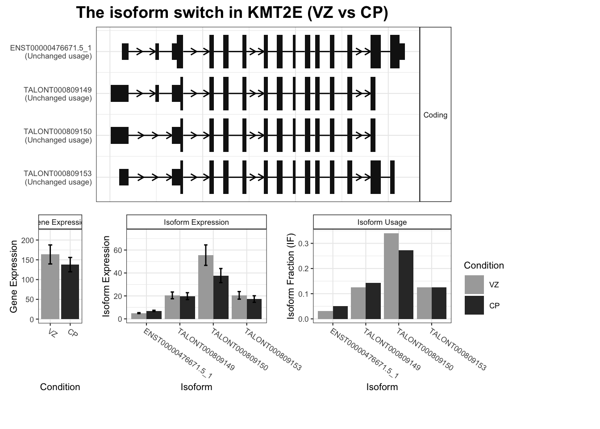

The GUESSTIMATED number of genes with differential isoform usage are:
comparison estimated_genes_with_dtu
1 VZ vs CP 524 - 873
Done
user system elapsed
124.402 19.815 170.603
# user system elapsed # 137.137 29.114 204.206 system.time({ SwitchList <-addORFfromGTF(switchAnalyzeRlist = SwitchList,pathToGTF =here("data", "orf.gtf.gz") )})
Step 1 of 2: importing GTF (this may take a while)...
Step 2 of 2: Adding ORF...
Added ORF info (incl info about isoforms annotated as not having an ORF) to 214028 isoforms.
This correspond to 100% of isoforms in the switchAnalyzeRlist.
Which includes 100% of isoforms from annotated genes (novel isoforms not counted) in the switchAnalyzeRlist.
Done.
user system elapsed
46.179 4.174 52.714
# user system elapsed # 50.152 5.283 60.974 system.time({ SwitchList <-preFilter(switchAnalyzeRlist = SwitchList,geneExpressionCutoff =1, # defaultisoformExpressionCutoff =0, # defaultIFcutoff =0.01, # defaultremoveSingleIsoformGenes =TRUE, # defaultreduceToSwitchingGenes =FALSE, # default (we didn't run DEXSeq yet)keepIsoformInAllConditions =TRUE# we only have 2 conditions so doesn't matter )})
The filtering removed 110330 ( 51.55% of ) transcripts. There is now 103698 isoforms left
user system elapsed
0.385 0.078 0.522
# user system elapsed # 0.444 0.215 1.109
switchPlot(SwitchList,gene='KMT2E')
Warning in switchPlot(SwitchList, gene = "KMT2E"): We recomend running the
isoform switching analysis before doing the transcript plot. See
?detectIsoformSwitching for more details
Omitting toplogy visualization as it has not been added. You can add this analysis through analyzeDeepTMHMM(). To avoid this message set "plotTopology=FALSE"

# Warning: We recomend running the isoform switching analysis before doing the transcript plot. See ?detectIsoformSwitching for more detailsOmitting toplogy visualization as it has not been added. You can add this analysis through analyzeDeepTMHMM(). To avoid this message set "plotTopology=FALSE"
Step 1 of 2: Testing each pairwise comparisons with DEXSeq (this might be a bit slow)...
Estimated run time is: 48 min
Step 2 of 2: Integrating result into switchAnalyzeRlist...
Isoform switch analysis was performed for 10809 gene comparisons (100%).
Total runtime: 28.6 min
Done
user system elapsed
413.261 6.971 1715.914
# user system elapsed # 412.189 11.498 516.883system.time({ SatuRnSwitchList <-isoformSwitchTestSatuRn(switchAnalyzeRlist = SwitchList,reduceToSwitchingGenes =FALSE )})
Warning in isoformSwitchTestSatuRn(switchAnalyzeRlist = SwitchList,
reduceToSwitchingGenes = FALSE): You seem to have few replicates. We therfore
recomend you use isoformSwitchTestDEXSeq() instead.
Step 1 of 4: Creating SummarizedExperiment data object...
Step 2 of 4: Fitting linear models...
Step 3 of 4: Testing pairwise comparison(s)...
Step 4 of 4: Preparing output...
Result added switchAnalyzeRlist
Done
user system elapsed
55.899 6.109 185.531
# user system elapsed # 58.635 5.900 72.164
#only those isoforms that are in the SwitchList are further processed in DTE analysiscts_preFilter = talonExpression |>filter(isoform_id %in% SwitchList$isoformFeatures$isoform_id)dds1 =DESeqDataSetFromMatrix(as.data.frame(cts_preFilter),as.data.frame(myDesign),~ donor + condition,tidy = T)
converting counts to integer mode
system.time({ dds1 =DESeq(dds1)})
estimating size factors
estimating dispersions
gene-wise dispersion estimates
mean-dispersion relationship
final dispersion estimates
fitting model and testing
user system elapsed
12.284 2.257 21.651
# user system elapsed # 23.745 0.860 25.086 #all isoforms are processed in DTE analysis#May be useful to look for isoforms of genes that are not expressed in some conditions but in others. In this case, Isoform Fraction is undefined since the denominator (gene expression) is 0. However, in DTE, the denominator is count of all isoforms expressed in a sample or condition, therefore DTE may still be defined. dds2 =DESeqDataSetFromMatrix(as.data.frame(talonExpression),as.data.frame(myDesign),~ donor + condition,tidy = T)
converting counts to integer mode
system.time({ dds2 =DESeq(dds2)})
estimating size factors
estimating dispersions
gene-wise dispersion estimates
mean-dispersion relationship
final dispersion estimates
fitting model and testing
user system elapsed
24.098 1.329 949.710
#compare dds1 (only those isoforms in filtered switch list) vs dds2 (all isoforms)nrow(cts_preFilter)
[1] 103698
# 214028nrow(talonExpression)
[1] 214516
# 214516# 488 isoforms are not in the filtered list
DTE_results = DESeq2::results(dds1)DTE_results
log2 fold change (MLE): condition CP vs VZ
Wald test p-value: condition CP vs VZ
DataFrame with 103698 rows and 6 columns
baseMean log2FoldChange lfcSE stat pvalue
<numeric> <numeric> <numeric> <numeric> <numeric>
ENST00000445118.7_3 1.346170 0.9090915 2.475410 0.3672489 0.713433
ENST00000669922.1_2 6.806499 0.3475271 0.930483 0.3734909 0.708783
ENST00000667414.1_2 0.395418 -0.0635991 4.052137 -0.0156952 0.987478
ENST00000666741.1_2 1.053656 0.1017830 2.697116 0.0377377 0.969897
ENST00000623070.4_4 0.136557 0.6140284 4.061304 0.1511900 0.879826
... ... ... ... ... ...
TALONT003232632 1.61132 3.18184 2.33657 1.361759 0.173274
TALONT003234130 1.09246 1.69604 2.91790 0.581253 0.561070
TALONT003244171 1.43836 2.94238 2.44162 1.205092 0.228168
TALONT003248050 1.33820 2.98860 2.49784 1.196477 0.231511
TALONT003248054 1.84804 3.16269 2.24221 1.410526 0.158384
padj
<numeric>
ENST00000445118.7_3 NA
ENST00000669922.1_2 0.92861
ENST00000667414.1_2 NA
ENST00000666741.1_2 NA
ENST00000623070.4_4 NA
... ...
TALONT003232632 NA
TALONT003234130 NA
TALONT003244171 NA
TALONT003248050 NA
TALONT003248054 NA
DTE_results = DTE_results |>as_tibble(rownames ="isoform_id") |>mutate(padj =replace_na(padj, 1))# If a row is filtered by automatic independent filtering, for having a low mean normalized count, then only the adjusted p value will be set to NA.#https://bioconductor.org/packages/release/bioc/vignettes/DESeq2/inst/doc/DESeq2.html#more-information-on-results-columns